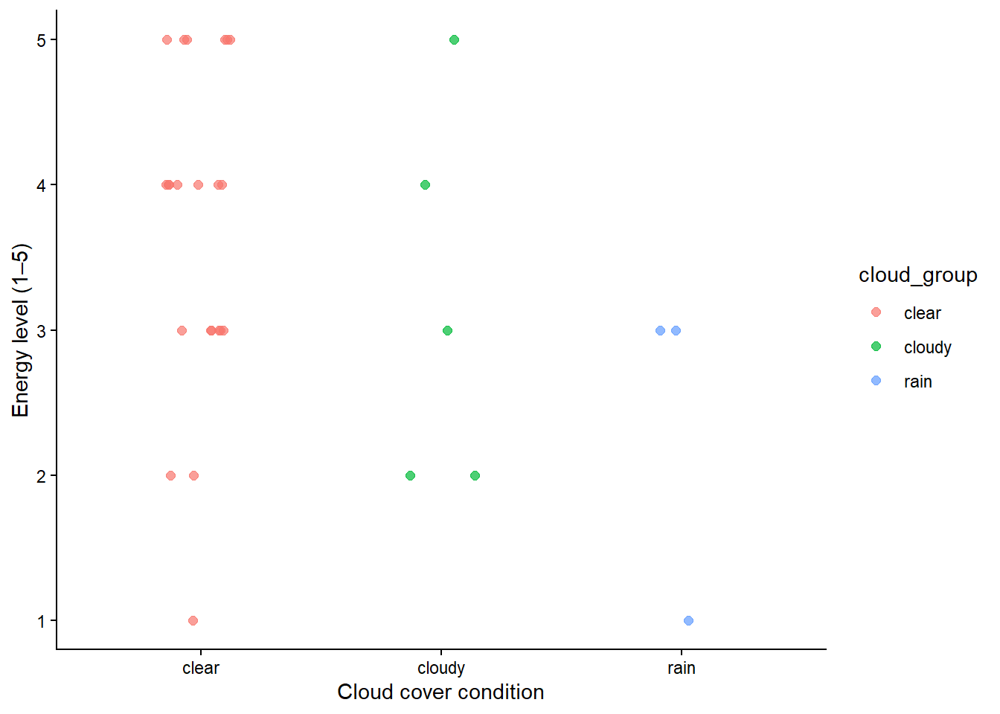
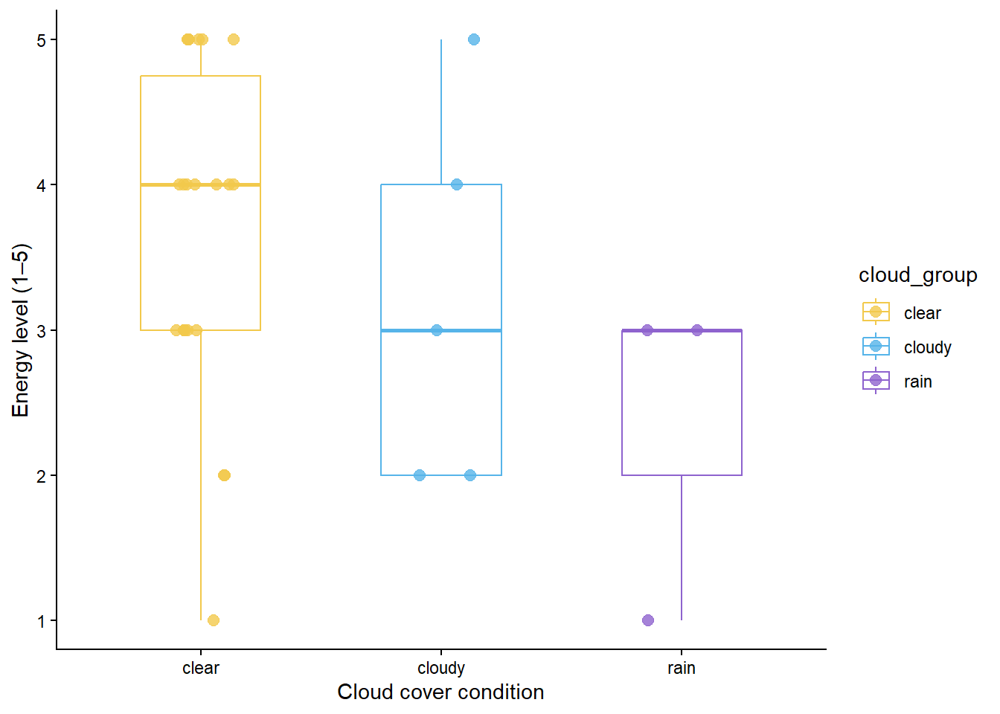

library(tidyverse) #load in tidyverse
library(janitor) #load in janitor
library(forcats) #load in forcats
library(here) #load in here
library(DHARMa) #load in DHARMaFinal
GitHub repository: ENVS-193DS_winter-2026_final
Set Up
Problem 1. Research writing
a. Transparent Statisitcal Methods
In part 1, they used a simple linear regression because they tested whether precipitation predicts flooded wetland area. In part 2, they used a Kruskal–Wallis rank-sum test because they tested whether median flooded wetland area differs across five water year classification groups.
b. Figure Needed
A good figure for part 2 would be a box plot with water year classification on the x-axis and flooded wetland area on the y-axis. I think this would be the best choice because it makes it easy to compare the median flooded wetland area across the five groups and also shows how spread out the data are in each one. I would also add the individual data points so it is easier to see the variation and overlap between groups.
c. Suggestions for Rewriting
Precipitation did not significantly predict flooded wetland area in the San Joaquin River Delta. This result was based on a simple linear regression (test statistic = not provided, distribution = not provided, degrees of freedom = not provided, p = 0.11, α = significance level not provided).
Median flooded wetland area also did not differ significantly across water year classifications. This result was based on a Kruskal-Wallis rank-sum test comparing wet, above normal, below normal, dry, and critical drought years (test statistic = not provided, distribution = chi-squared, degrees of freedom = 4, p = 0.12, α = significance level not provided).
d. Interpretation
One additional variable that could influence flooded wetland area is median daily outflow during the spring management period. This would be a continuous variable, and it could affect flooded wetland area as the paper found flooded wetland area was weakly correlated with Delta outflow during a key time for wetland water management.
Problem 2. Data Visualization
a. Cleaning and Summarizing
Read in Kelp Data
kelp <- read_csv(here("data", "kelp_data.csv")) #Read in Kelp data and make data frame called kelpkelp_clean <- kelp |> # make new data frame called data clean
clean_names() |> # cleans the column names
filter(site %in% c("IVEE", "NAPL", "CARP")) |> # keeps only the three sites of interest
mutate(site_name = case_when(
site == "NAPL" ~ "Naples", # when code say NAPL change to naples
site == "IVEE" ~ "Isla Vista", #when code says IVEE change to Isla Vista
site == "CARP" ~ "Carpinteria" # when code say CARP change to Carpenteria
)) |> # creates a new column with full site names
mutate(site_name = as_factor(site_name), #change the site names
site_name = fct_relevel(site_name, "Naples", "Isla Vista", "Carpinteria")) |> # makes site_name a factor and sets the order
filter(!(date == "2000-09-22" & transect == "6" & quad == "40")) |> #filter data
# removes the flagged incorrect observation
group_by(site_name, year) |># groups the data by site and year
summarize(mean_fronds = mean(fronds)) |> # calculates the mean for each site-year combination
ungroup() # removes groupsslice_sample(kelp_clean, n = 5) #show sample of clean data# A tibble: 5 × 3
site_name year mean_fronds
<fct> <dbl> <dbl>
1 Isla Vista 2024 10.3
2 Carpinteria 2003 5.27
3 Carpinteria 2010 3.53
4 Carpinteria 2023 4.50
5 Carpinteria 2005 6.24str(kelp_clean) #show str tibble [77 × 3] (S3: tbl_df/tbl/data.frame)
$ site_name : Factor w/ 3 levels "Naples","Isla Vista",..: 1 1 1 1 1 1 1 1 1 1 ...
$ year : num [1:77] 2000 2001 2002 2003 2004 ...
$ mean_fronds: num [1:77] 1.8947 0.0606 3.0111 9.2596 7.8141 ...b. Understanding the Data
The observation from 2000-09-22 in transect 6 and quad 40 is filtered out because the fronds value is -99999, which is a missing-data code rather than a real measurement. In this dataset, FRONDS represents the number of giant kelp fronds greater than 1 meter tall, and for this row the value appears because the datasheet was missing, so it should not be treated as an actual frond count.
c. Visualize the Data
ggplot(kelp_clean, aes(x = year, y = mean_fronds, color = site_name)) + #create plot with clean data and add x and y variables
geom_line(linewidth = 0.7) + #change width of line
geom_point(size = 2) + #change size of points
scale_color_manual( #colors of different varaibles
name = "Site",
values = c(
"Naples" = "#157A76", #color for naples
"Isla Vista" = "#8E7767", #color for isla vista
"Carpinteria" = "#5E776F" #color for carpinteria
)
) +
scale_x_continuous(breaks = seq(2000, 2025, by = 5)) + #make scales
labs(
title = "Sites vary in mean kelp fronds per year", #label title
x = "Year", #x axis label
y = "Mean kelp fronds per year" # y axis label
) +
theme_minimal(base_family = "sans") + #set theme
theme(
plot.title = element_text(hjust = 0.5), #change plot elements
panel.border = element_blank(),
legend.position = "right" #change position of legend
)
d. Interpretaion
The figure shows that mean kelp fronds vary across both year and site. Isla Vista tends to have the highest values and the biggest changes over time, while Naples and Carpinteria are usually lower. Overall, the plot suggests that kelp abundance is not constant and differs depending on location and year.
Problem 3. Data Analysis
Set up
mopl <- read_csv(here("data", "MOPL_nest-site_selection_Duchardt_et_al._2019.csv")) #read in data into a data frame called mopla. Response Varirables
In this data set, a value of 1 means the location was a nest site that was used by a Mountain Plover, and a value of 0 means the location was an available site that was not used for nesting. Biologically, the response variable represents nest-site use, or whether a Mountain Plover selected that location for nesting.
b. Purpose of Study
vo_nest is a continuous variable because it is measured numerically. As visual obstruction increases, the probability of Mountain Plover nest-site use would decrease because plovers tend to choose open nesting habitat with shorter and less dense vegetation. This is summed up in the Introduction where the paper mentions that Mountain Plovers typically breed in areas with extensive bare ground and short, sparse vegetation.
edgedist is a continuous variable because it measures distance to the prairie dog colony edge. As distance to colony edge increases, the probability of nest-site use would probably decrease because the paper suggests plovers are more likely to use areas closer to colony edges than deep colony cores. This can be found in the Discussion portion where the authors say probability of site use declined near the cores of large colonies and that distance to colony edge was a strong driver of plover presence.
c. Table of Models
| Model number | Visual obstruction | Distance to prairie dog colony | Predictor list |
|---|---|---|---|
| 1 | no predictors (null model) | ||
| 2 | x | visual obstruction | |
| 3 | x | distance to prairie dog colony edge | |
| 4 | x | x | all predictors (full model) |
d. Run the Models
mopl_clean <- mopl |> #start with clean data frame
clean_names() |> #clean the names in the data folder
mutate(
used_bin = case_when(
id == "used" ~ 1, # when used = 1
id == "available" ~ 0 # when available = 0
)
) |>
select(used_bin, edgedist, vo_nest) |> #select attributes
drop_na()# model 1: null model
model1 <- glm(
used_bin ~ 1,
data = mopl_clean,
family = binomial
)
# model 2: visual obstruction only
model2 <- glm(
used_bin ~ vo_nest,
data = mopl_clean,
family = binomial
)
# model 3: distance to colony edge only
model3 <- glm(
used_bin ~ edgedist,
data = mopl_clean,
family = binomial
)
# model 4: full model
model4 <- glm(
used_bin ~ vo_nest + edgedist,
data = mopl_clean,
family = binomial
)e. Select the Best Model
AIC(model1, model2, model3, model4) #run test to determine best model df AIC
model1 1 384.6172
model2 2 331.7690
model3 2 386.0911
model4 3 333.7410The best model, determined by Akaike’s Information Criterion (AIC), was the model 2 which predicted Mountain Plover nest-site use from visual obstruction. This model had the lowest AIC value (331.769), so it provided the best fit among the candidate models while balancing model complexity.
f. Check Diagnostics
model2_sim <- simulateResiduals(fittedModel = model2) #check diagnostics using simulated DHARMA residuals
plot(model2_sim)
I checked the diagnostics for the selected logistic regression model using simulated DHARMa residuals. The diagnostic plots did not show any significant problems, and the formal tests suggested no significant evidence of poor residual fit, overdispersion, or unusual outliers. Overall, the model appears to meet the previously made assumptions well.
From the figure:
KS test p = 0.72382 → no evidence the residual distribution is off
Dispersion test p = 0.992 → no evidence of overdispersion
Outlier test p = 1 → no evidence of problematic outliers
the top-right panel also says “No significant problems detected”
g. Visualize the model predicitons
pred_data <- tibble( #creates empty tibble
vo_nest = seq( #creates new colomn called vo_nest
from = min(mopl_clean$vo_nest, na.rm = TRUE), #starts sequence at min
to = max(mopl_clean$vo_nest, na.rm = TRUE), #ends seqence at max
length.out = 100 #creates 100 spread out values
)
)
predictions <- predict(model2, newdata = pred_data, type = "link", se.fit = TRUE) #use regression model to generate predictions
pred_data <- pred_data |> #uses pred data as new data for predictions
mutate( #creates new colums based on predictions
fit_link = predictions$fit,
se_link = predictions$se.fit,
fit_prob = plogis(fit_link),
lower_ci = plogis(fit_link - 1.96 * se_link), #95% interval
upper_ci = plogis(fit_link + 1.96 * se_link) #95% interval
)ggplot() + #start with gg plot
geom_jitter( #adds jitter
data = mopl_clean, #use clean data frame
aes(x = vo_nest, y = used_bin), #assign x variable and y variable
height = 0.03,
width = 0, #change dimensions of jitter
alpha = 0.4,
color = "#5B8A72" #change color of jitter
) +
geom_ribbon(
data = pred_data, #uses prediction data
aes(x = vo_nest, ymin = lower_ci, ymax = upper_ci), #add ribbon for 95% interval
fill = "#A5C4B0", #color of ribbon
alpha = 0.4
) +
geom_line( #add model prediction lines
data = pred_data, #start with prediction data
aes(x = vo_nest, y = fit_prob), # assign x and y
color = "#1F5A4A", #line color
linewidth = 1.2 #line width
) +
labs(
x = "Visual obstruction at nest", #label x and y axis
y = "Predicted probability of Mountain Plover nest-site use"
) +
theme_classic() #change theme to classic 
h. Captions
Figure 1. Predicted probability of Mountain Plover nest-site use as a function of visual obstruction at the nest. Points show the underlying binary nest-site use data (0 = available but unused site, 1 = used nest site), the solid line shows predicted probabilities from the selected logistic regression model, and the shaded band shows 95% confidence interval around the predictions. Data source: Duchardt, Courtney; Beck, Jeffrey; Augustine, David (2020). Data from: Mountain Plover habitat selection and nest survival in relation to weather variability and spatial attributes of Black-tailed Prairie Dog disturbance.
i. Calculate Model Predictions
predict(
model2,
newdata = tibble(vo_nest = 0),
type = "response"
) #find predict probability 1
0.7320954 At a visual obstruction value of 0, the predicted probability of Mountain Plover nest-site occupancy is 0.732. This means the model predicts about a 73.2% probability that a site with no visual obstruction would be used as a nest site.
j. Interpret Results
The results suggest that visual obstruction is an important predictor of Mountain Plover nest-site use. As visual obstruction increases, the predicted probability of nest-site use decreases, which suggests that Mountain Plovers are more likely to select open nesting areas with little visual blockage. This aligns with the ecological the paper, which describes Mountain Plovers as birds that prefer relatively flat areas with bare ground and sparse vegetation.
Problem 4. Affective and Exploratory Visualizations
a. Comparing Visualizations
How are the visualizations different?
My Homework 2 exploratory visualizations represented the data in a more standard statistical way, using separate box plots with jitters to isolate one relationship at a time, like cloud cover and energy or temperature and energy. By contrast, my effective visualization turns the same daily observations into a hand-drawn flower garden, where each flower stands for one day and multiple variables are layered into the same symbol through stem height, petal number, color, leaves, and flower center.
Similarities
All of my visualizations are still based on the same personal daily data and focus on understanding what shapes my energy over time. Even though the style changes, they all keep energy as the main outcome and try to connect it to other daily conditions like cloud cover, sleep, and other factors that may influence how I feel.
Patterns
Across both the exploratory and affective visualizations, I see that energy seems to shift with weather and other daily conditions rather than staying constant. In Homework 2, I wrote that higher temperatures seemed to be associated with slightly higher energy levels and that cloud cover might also matter, while the flower visualization reinforces that energy is highest on some bright days but also shows that sleep, assignments, caffeine, and steps are happening at the same time. The patterns are not completely different, but the affective visualization makes the data feel more layered and personal because several variables are shown together. Something I did notice is that I tended to have very low energy levels on Friday’s which is interesting as that is my final day of the week for assignments and school.
Feedback
During week 9 workshop my group gave me the fantastic idea of visualizing my data through flowers. I implemented that process by making sure each flower feature had a clear meaning and that the final piece had a readable legend, consistent visual structure, and a clear connection between the timeline and the variables being represented. After presenting my visualization in week 10, it was clear that this was a solid choice as my peers said it was easy to follow yet displayed a lot of different variables of data.
b. Designing Analysis
Research question: Do energy levels differ across cloud cover conditions?
I would use a Kruskal-Wallis test to answer this question. My response variable is energy level measured on a 1 to 5 scale, and my predictor variable is cloud cover grouped into the categories clear, cloudy, and rain. This analysis is appropriate because I am comparing energy across more than two categorical weather groups, and Kruskal-Wallis is the non-parametric test used for this type of comparison.
c. Check Assumptions and Run Analysis
Because my response variable was energy level on a 1 to 5 scale and my predictor variable was cloud cover category, I used a non-parametric Kruskal-Wallis test instead of a parametric ANOVA. I first checked the number of observations in each recoded cloud cover group and looked at the underlying data with a jitter plot to make sure the categories were reasonable for comparison.
Set up
daily_data <- read_csv(here("data", "ENVSdsresearch.csv")) #create new data frame with personal data Clean Data
daily_clean <- daily_data |> #clean personal data
clean_names() |>
mutate( #create new columns combining partly cloudy and cloudy
cloud_group = case_when(
cloud_cover == "mostly clear" ~ "clear", #assign category
cloud_cover == "partly cloudy" ~ "cloudy", #assign category
cloud_cover == "cloudy" ~ "cloudy", #assign category
cloud_cover == "cloudy/rain" ~ "rain" #asssign category
),
cloud_group = as_factor(cloud_group), #group by factor
cloud_group = fct_relevel(cloud_group, "clear", "cloudy", "rain")
) |>
select(cloud_group, energy_level_1_5) #select group and energy level Show count Per Category
count(daily_clean, cloud_group) #shou count for each category # A tibble: 3 × 2
cloud_group n
<fct> <int>
1 clear 22
2 cloudy 5
3 rain 3Create plot visualization
ggplot(daily_clean, aes(x = cloud_group, y = energy_level_1_5, color = cloud_group)) + #creae gg plot and assign axis
geom_jitter(width = 0.15, height = 0, size = 2, alpha = 0.7) + #addi jitter
labs(
x = "Cloud cover condition", #label x axis
y = "Energy level (1–5)" #label y axis
) +
theme_classic() #set theme 
Run test
kruskal.test(energy_level_1_5 ~ cloud_group, data = daily_clean) #run test
Kruskal-Wallis rank sum test
data: energy_level_1_5 by cloud_group
Kruskal-Wallis chi-squared = 3.475, df = 2, p-value = 0.176kruskal_result <- kruskal.test(energy_level_1_5 ~ cloud_group, data = daily_clean) #show results
n <- nrow(daily_clean)
k <- nlevels(daily_clean$cloud_group)
H <- as.numeric(kruskal_result$statistic)
eta_squared_H <- (H - k + 1) / (n - k)
eta_squared_H #show results [1] 0.05463112I ran a Kruskal-Wallis test to compare energy levels across cloud cover conditions. I used the recoded categories clear, cloudy, and rain, where clear represented mostly clear days, cloudy combined partly cloudy and cloudy days, and rain represented cloudy/rain days. The test was not statistically significant, 𝜒 2 = 3.475 χ 2 =3.475, 𝑑 𝑓 = 2 df=2, 𝑝 = 0.176 p=0.176, which suggests there is not strong evidence that typical energy level differed across cloud cover groups in this sample. The effect size was small ( 𝜂 2 ≈ 0.055 η 2 ≈0.055), suggesting cloud cover explained only a small amount of the variation in energy levels.
d. Create Visualization
ggplot(daily_clean, aes(x = cloud_group, y = energy_level_1_5, color = cloud_group)) + #create ggplot
geom_boxplot(outlier.shape = NA, alpha = 0.2, width = 0.5) + #add boxplots
geom_jitter(width = 0.15, height = 0, size = 2.4, alpha = 0.8) + #add jitter
scale_color_manual(values = c(
"clear" = "#F2C94C", #change colors
"cloudy" = "#56B4E9", #change colors
"rain" = "#8E63CE" #change colors
)) +
labs(
x = "Cloud cover condition", #label x axis
y = "Energy level (1–5)" #label y axis
) +
theme_classic() #set theme to classic 
To reflect the Kruskal-Wallis analysis, I created a boxplot with jittered points showing energy level across recoded cloud cover groups. This visualization makes it easier to compare the spread and typical values of energy across the weather categories while still showing the underlying observations.
e. Write a Caption
Figure 2. Energy levels across recoded cloud cover conditions. Points show individual daily observations of energy level on a 1 to 5 scale, while boxplots summarize the distribution of energy within the clear, cloudy, and rain groups. Colors were chosen to match the weather categories used in the affective flower visualization.
f. write about your results
The visualization and Kruskal-Wallis test both suggest that cloud cover may relate to energy level, but the evidence was not strong enough in this sample to conclude that energy differed significantly across the cloud cover groups. The effect size was small, which suggests cloud cover explained only a small amount of the variation in my energy. This fits with my affective visualization, which shows that energy is likely shaped by several daily factors at once rather than weather alone.
g. Week 10 Attendance
I was there!